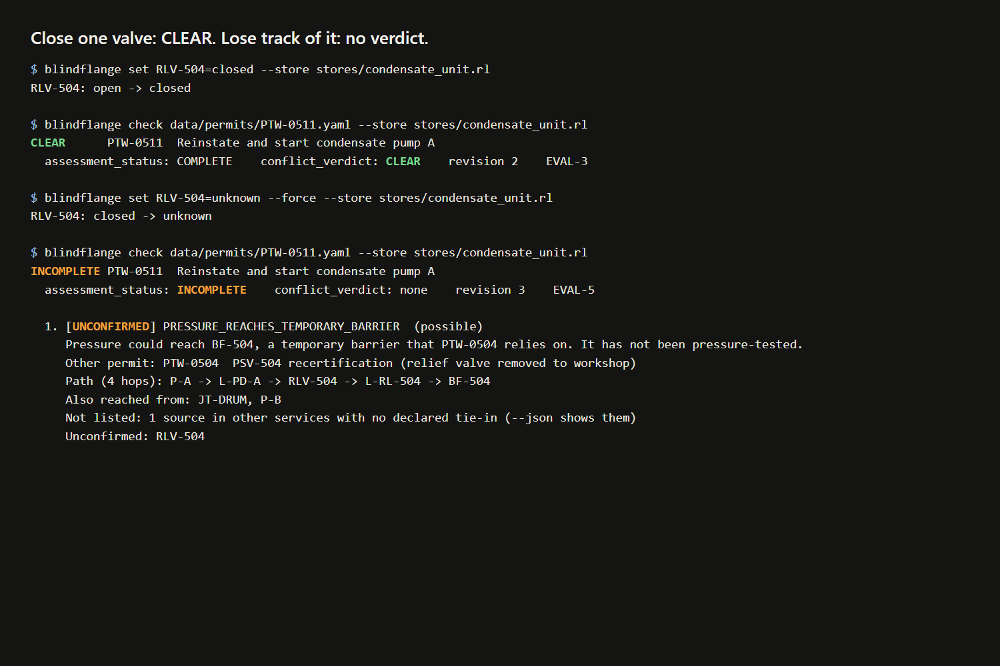
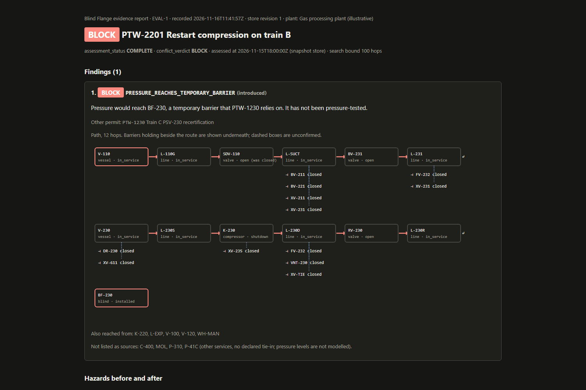
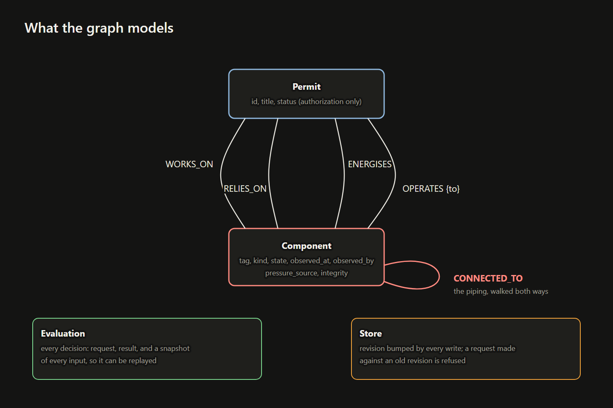

One minute, one path
The demo

How it works
Three steps
Two safe permits, one hazard
Two permits can each look safe and still conflict, because the equipment they name is joined by piping neither mentions. Matching by equipment tag cannot see it. On Piper Alpha in 1988 the two permits named different equipment; this tool does not claim it would have prevented that.
Relate walks the pipes
One .rl file holds the plant, valve and blind states, open permits and every decision. One Cypher path query walks the piping and stops at each closed valve or installed blind. A request is checked as a dry run inside a transaction, then rolled back.
An answer with its path
Every finding carries the route that proves it. If a state that matters is unknown, or the search hit its limit, there is no verdict, and the reason is named.




blindflange report draws the path and the barriers holding beside each step. Open the full report.
For engineers: the query, the verdicts, the guarantees
MATCH path = SHORTEST 1 (s)
((a)-[:CONNECTED_TO]-(b)
WHERE ( NOT coalesce(a.state, 'unknown')
IN ['closed', 'installed', 'removed', 'unknown']
AND coalesce(a.observed_at, '') >= $stale_before )
OR ( $possible AND
(coalesce(a.state, 'unknown') = 'unknown'
OR coalesce(a.observed_at, '') < $stale_before) )
){0,100} (x:Component)
OPTIONAL MATCH (q:Permit)-[r:WORKS_ON|RELIES_ON]->(x)
// closed and installed are barriers; unknown or stale
// is never a barrier, and passable only in the POSSIBLE pass.| Status | Verdict | Meaning |
|---|---|---|
| COMPLETE | BLOCK | A proven conflict this request introduces, with its path. |
| COMPLETE | HOLD | Review needed: a shared isolation, or a hazard that already exists. |
| COMPLETE | CLEAR | No conflict found, and nothing needed was unknown. |
| INCOMPLETE | none | A state that matters is unknown or stale, or the search hit its bound. |
| ERROR | none | Unknown tag, ambiguous change, or stale revision. Recorded too. |
- Proven or possible. The query runs twice: known states only, then unconfirmed ones too. A possible finding withholds the verdict instead of guessing.
- Bounded, and honest about it. If the hop limit cut anything off, the result is INCOMPLETE, never CLEAR.
- Every decision kept. Each assessment stores its inputs;
blindflange replayre-runs it.
An agent can ask, not decide
Proof
blindflange mcp serves nine tools over the Model Context Protocol. None approves a permit or changes the plant. We asked Claude Code the same question twice: can train B be restarted?
Without the tool
"Verify the P&IDs"
It found no direct conflict in the permit list and hedged. It could not name the bypass, because the bypass is in no permit.
With the tool
Do not approve
assess_change returned BLOCK with the 12-hop path; explain_finding showed the route goes around the closed XV-231 through the open bypass BV-231. Transcript
of 35 eval cases give the expected verdict (8 expect "cannot say")
risky requests stopped by tag matching alone
random plants where an independent walk agrees, plus 35 cases
recorded evaluations replay to the same result
tests pass on Linux, macOS and Windows CI
deliberate mutations of the checks caught
These cases show what the checks do. They are not evidence of field performance. A second agent session shows why the agent now assesses the permit as written.
Try it
From a fresh clone
$ git clone https://github.com/loksai-codes/blind-flange.git && cd blind-flange $ python -m venv .venv $ source .venv/bin/activate # Windows: .venv\Scripts\activate $ pip install -e . $ cp stores/condensate_unit.rl work.rl # Windows: copy $ python -m blindflange check data/permits/PTW-0511.yaml --store work.rl
Decision support only. Not a safety system. Not reviewed by a process safety engineer. Both plants are illustrative.
Pressure is modelled as reachability only: no flow rates, pressure levels or fluids. Only the final state is checked. Electrical isolation is out of scope.
Commercial control-of-work products such as Sphera, Enablon and IntelliPERMIT already manage permits and isolations. Blind Flange does not replace them; it is a small, open, single-file tool whose every finding can be inspected and replayed.